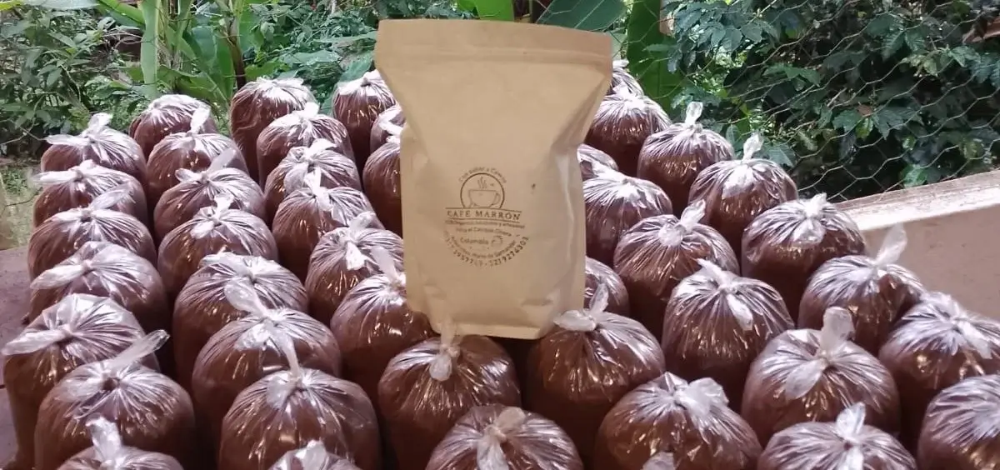
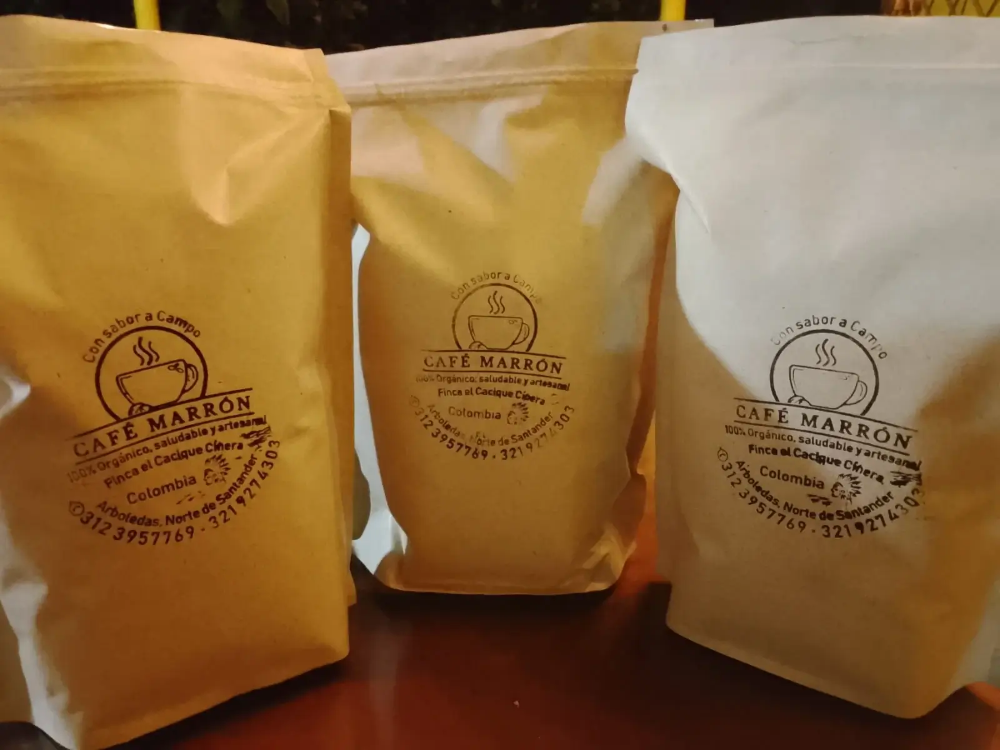
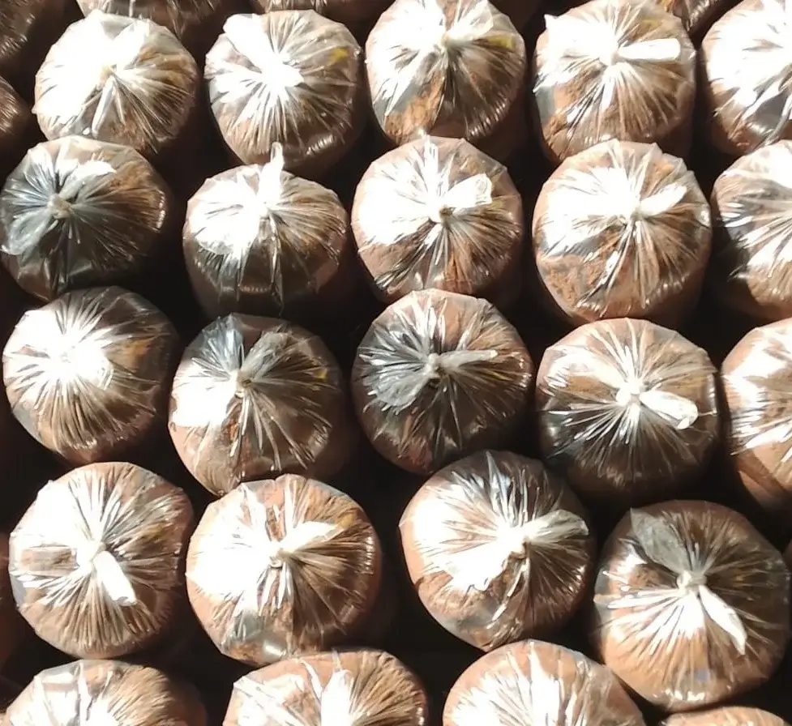
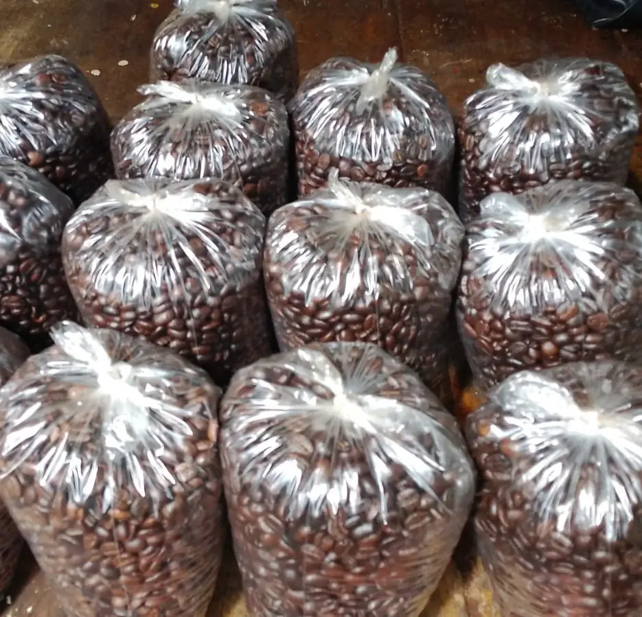
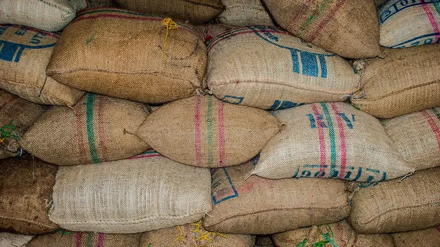

01
Café artesanal
Estamos orgullosos del trabajo y eso se nota. En empacado, molido, grano o suelto, cada pedido es una experiencia que merece repetirse.
Presentaciones
Cosechado, procesado, secado, tostado y molido en la finca. Cada presentación guarda el mismo café.

Estamos orgullosos del trabajo y eso se nota. En empacado, molido, grano o suelto, cada pedido es una experiencia que merece repetirse.

Cada paquete guarda el aroma de un café recién tostado. Ábrelo, prepáralo y deja que cada sorbo despierte el día.

El sabor que buscas, listo para preparar. Café Marrón molido entrega aroma intenso y calidad en cada taza.

Aquí el café es personal. Llevas a casa frescura y sabor en cada grano, para molerlo como quieras.

Pasa por la Av. 6 #1-23, sector Hospital, en Arboledas, Norte de Santander, y lleva la cantidad que necesites.